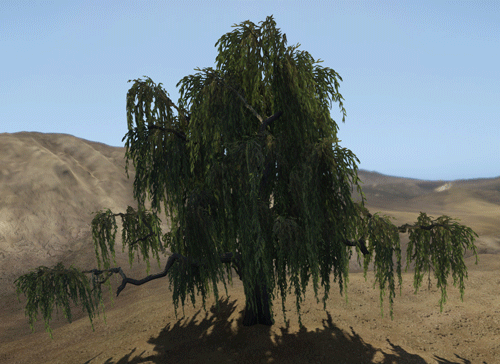

Overview
The Merged Mesh Deform Cloth is an improved version of the old standard cloth, where you have to use the cloth entity. It can be attached to any .cgf within your 3dsMax scene. You can use it on brushes as well as on vegetation objects. It gets affected by the global wind settings and breeze settings in the editor.
Splitting up your cloth nodes as much as possible will be more effective. The cloth nodes get merged into larger single objects in real-time. Every material ID gets it's own merged object.
The following pages explains in detail about the setup and configuration for the 3dsMax and Maya pipelines, followed by the final CRYENGINE section where you get the object in-game.

Pic1: Merged Mesh Deform in action (with activated wind)
Tutorials
Depending on the DCC tool used - the links below show you how to setup vegetation assets for Deformation.